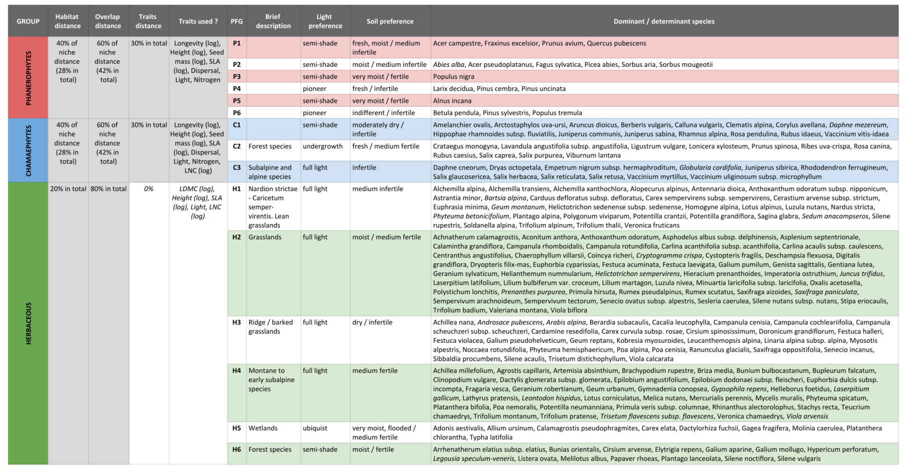
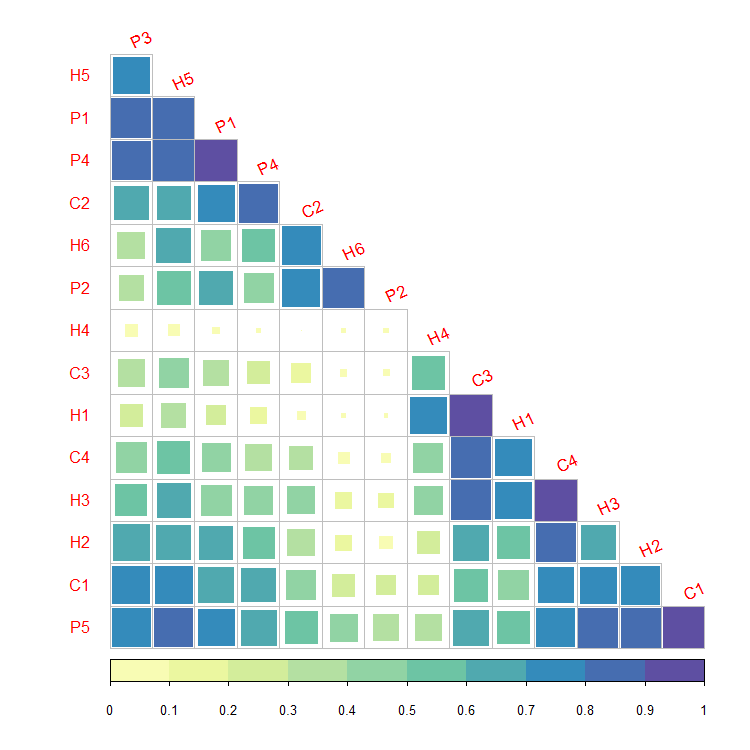
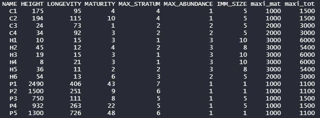
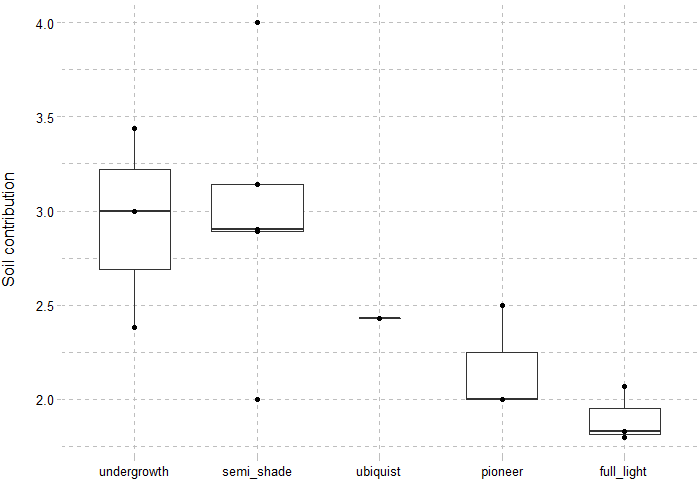

The different parts of the Champsaur example dataset can be downloaded with the .loadData function, or from the links below :
library(RFate)
Champsaur_PFG = .loadData("Champsaur_PFG", "RData")
###################################################################################################
## DOMINANT SPECIES
###################################################################################################
## Species observations
tab.occ = Champsaur_PFG$sp.observations
str(tab.occ)
## Run selection ----------------------------------------------------------------------------------
sp.SELECT = PRE_FATE.selectDominant(mat.observations = tab.occ[, c("sites", "species", "abund")]
, doRuleA = TRUE
, rule.A1 = 10
, rule.A2_quantile = 0.88
, doRuleB = TRUE
, rule.B1_percentage = 0.25
, rule.B1_number = 10
, rule.B2 = 0.5
, doRuleC = FALSE
, opt.doRobustness = TRUE
, opt.robustness_percent = seq(0.1, 0.9, 0.1)
, opt.robustness_rep = 10)
## Explore results
names(sp.SELECT)
str(sp.SELECT[1:5])
str(sp.SELECT$tab.rules)
plot(sp.SELECT$plot.A)
plot(sp.SELECT$plot.B$abs)
plot(sp.SELECT$plot.B$rel)
plot(sp.SELECT$plot.pco$Axis1_Axis2)
# plot(sp.SELECT$plot.pco$Axis1_Axis3)
str(sp.SELECT$tab.robustness)
names(sp.SELECT$plot.robustness)
plot(sp.SELECT$plot.robustness$`All dataset`)
## Prepare data to calculate pairwise species distance --------------------------------------------
# ## Calculate mat.overlap matrix
# ## Add absences for community sites
# tab.dom.PA = sp.SELECT$tab.dom.PA
# for (si in sites$sites[which(sites$TYPE == "COMMUNITY")])
# {
# ind = which(rownames(tab.dom.PA) == si)
# tab.dom.PA[ind, which(is.na(tab.dom.PA[ind, ]))] = 0
# }
#
# ## Prepare environmental (and traits) table
# tab.env = Champsaur_PFG$tab.env
# tmp.traits = Champsaur_PFG$sp.traits[, c("species", "HEIGHT", "HEIGHT_log")]
# sp.DIST = PRE_FATE.speciesDistance(mat.traits = tmp.traits
# , mat.overlap.option = "PCA"
# , mat.overlap.object = list(tab.dom.PA, tab.env))
# mat.overlap = sp.DIST$mat.OVERLAP
# (mat.overlap[1:5, 1:5])
mat.habitat = Champsaur_PFG$mat.habitat
mat.overlap = Champsaur_PFG$mat.overlap
## Transform dissimilarity matrices into similarity distances
mat.habitat = 1 - mat.habitat
mat.overlap = 1 - mat.overlap
## Combine distances of habitat preferences and niche overlap
## to have one matrix to reflect the species niches
ind.sp = intersect(colnames(mat.overlap), colnames(mat.habitat))
wei.habi = 0.4
wei.over = 0.6
mat.env = (wei.habi * mat.habitat[ind.sp, ind.sp] + wei.over * mat.overlap[ind.sp, ind.sp]) / (wei.habi + wei.over)
(mat.habitat[ind.sp, ind.sp][1:5, 1:5])
(mat.overlap[ind.sp, ind.sp][1:5, 1:5])
(mat.env[1:5, 1:5])
tab.traits.P = sp.traits.P
tab.traits.C = sp.traits.C
tab.traits.H = sp.traits.H
str(tab.traits.P)
str(tab.traits.C)
str(tab.traits.H)
###################################################################################################
## PHANEROPHYTE
###################################################################################################
## Calculate pairwise species distance ------------------------------------------------------------
sp.DIST.P = PRE_FATE.speciesDistance(mat.traits = tab.traits.P
, mat.overlap.option = "dist"
, mat.overlap.object = mat.env
, opt.weights = c(0.3, 0.7)
, opt.maxPercent.NA = 0.25
, opt.maxPercent.similarSpecies = 0.5
, opt.min.sd = 0.5)
str(sp.DIST.P)
{
require(foreach)
require(ggplot2)
require(ggdendro)
pp = foreach(x = names(sp.DIST)) %do%
{
hc = hclust(sp.DIST[[x]])
pp = ggdendrogram(hc, rotate = TRUE) +
labs(title = paste0("Hierarchical clustering based on species distance "
, ifelse(length(names(sp.DIST)) > 1
, paste0("(group ", x, ")")
, "")))
return(pp)
}
plot(pp[[1]])
plot(pp[[2]])
plot(pp[[3]])
}
## Build clusters and choose final groups number --------------------------------------------------
sp.CLUST1.P = PRE_FATE.speciesClustering_step1(sp.DIST.P$mat.ALL)
sp.CLUST2.P = PRE_FATE.speciesClustering_step2(clust.dendrograms = sp.CLUST1.P$clust.dendrograms
, no.clusters = 5
, mat.species.DIST = sp.DIST.P$mat.ALL)
names(sp.CLUST2.P)
str(sp.CLUST2.P$determ.sp)
str(sp.CLUST2.P$determ.all)
plot(sp.DETERM$plot.distance)
plot(sp.DETERM$plot.PCO$Phanerophyte)
###################################################################################################
## CHAMAEPHYTE
###################################################################################################
## Calculate pairwise species distance ------------------------------------------------------------
sp.DIST.C = PRE_FATE.speciesDistance(mat.traits = tab.traits.C
, mat.overlap.option = "dist"
, mat.overlap.object = mat.env
, opt.weights = c(0.3, 0.7)
, opt.maxPercent.NA = 0.25
, opt.maxPercent.similarSpecies = 0.5
, opt.min.sd = 0.5)
## Build clusters and choose final groups number --------------------------------------------------
sp.CLUST1.C = PRE_FATE.speciesClustering_step1(sp.DIST.C$mat.ALL)
sp.CLUST2.C = PRE_FATE.speciesClustering_step2(clust.dendrograms = sp.CLUST1.C$clust.dendrograms
, no.clusters = 3
, mat.species.DIST = sp.DIST.C$mat.ALL)
###################################################################################################
## HERBACEOUS
###################################################################################################
## Rearrange data (more difficult to distinguish groups among herbaceous species) -----------------
## Separate some species quite different from the rest
PFG_wetlands = c("15735", "15211", "10429", "17167", "40501", "16522", "40514", "14782", "40445")
tab.traits.H = tab.traits.H[-which(tab.traits.H$species %in% PFG_wetlands), ]
## Put more weights on niche overlap
ind.sp = intersect(colnames(mat.overlap), colnames(mat.habitat))
wei.habi = 0.2
wei.over = 0.8
mat.env = (wei.habi * mat.habitat[ind.sp, ind.sp] + wei.over * mat.overlap[ind.sp, ind.sp]) / (wei.habi + wei.over)
## Calculate pairwise species distance ------------------------------------------------------------
sp.DIST.H = PRE_FATE.speciesDistance(mat.traits = tab.traits.H
, mat.overlap.option = "dist"
, mat.overlap.object = mat.env
, opt.weights = c(0, 1)
, opt.maxPercent.NA = 0.25
, opt.maxPercent.similarSpecies = 0.5
, opt.min.sd = 0.5)
## Build clusters and choose final groups number --------------------------------------------------
sp.CLUST1.H = PRE_FATE.speciesClustering_step1(sp.DIST.H$mat.ALL)
sp.CLUST2.H = PRE_FATE.speciesClustering_step2(clust.dendrograms = sp.CLUST1.H$clust.dendrograms
, no.clusters = 7
, mat.species.DIST = sp.DIST.H$mat.ALL)
###################################################################################################
## PLANT FUNCTIONAL GROUPS
###################################################################################################
tab.PFG = Champsaur_PFG$PFG.species
tab.traits = Champsaur_PFG$sp.traits
tab.summary = tab.traits[, c("species", "MATURITY", "LONGEVITY", "HEIGHT", "LIGHT"
, "DISPERSAL", "NITROGEN", "NITROGEN_TOLERANCE", "LDMC", "LNC")]
colnames(tab.summary) = c("species", "maturity", "longevity", "height", "light"
, "dispersal", "soil_contrib", "soil_tolerance", "LDMC", "LNC")
tab.summary$soil_contrib = as.numeric(tab.summary$soil_contrib)
tab.summary$soil_tolerance = ifelse(tab.summary$soil_tolerance == 1, 0.5, 1)
tab.summary = merge(tab.PFG[, c("PFG", "species")], tab.summary, by = "species", all.x = TRUE)
head(tab.summary)
## Calculate trait values per PFG -----------------------------------------------------------------
PFG.traits = PRE_FATE.speciesClustering_step3(mat.traits = tab.summary)A brief description of the Plant Functional Groups obtained for the Champsaur dataset is presented below. italic represents species that have been pointed out as Not determinant by the PRE_FATE.speciesClustering_step2 function (difference between dominant and determinant species is explained in the Details section of this function), but in this example they have all been kept for consistency in concerned PFG.

FATE parameter filesbiomod2 package)
library(RFate)
Champsaur_params = .loadData("Champsaur_params", "RData")
###################################################################################################
## BUILD PFG HABSUIT MAPS (biomod2 package)
###################################################################################################
require(biomod2)
## Species observations
tab.occ = Champsaur_params$tab.occ
str(tab.occ)
## Sites environmental table
tab.env = Champsaur_params$tab.env
str(tab.env)
## Sites coordinates table
tab.xy = Champsaur_params$tab.xy
str(tab.xy)
## Raster stack for projection
stk.var = Champsaur_params$stk.var
## Run species distribution models ----------------------------------------------------------------
for(pfg in colnames(tab.occ))
{
nrep = 5
sp.name = pfg
sp.occ = tab.occ[which(!is.na(tab.occ[, pfg])), pfg]
sp.xy = tab.xy[which(!is.na(tab.occ[, pfg])), c("X", "Y")]
sp.var = tab.env[which(!is.na(tab.occ[, pfg])), ]
#########################################################################################
## BELOW, MOST CHANGES WILL BE FOR MODELS PARAMETERS OR ADAPT DATA
## ALL NEEDED DATA HAS BEEN PRESENTED PREVIOUSLY
## formating data in a biomod2 friendly way ------------------------------------
bm.form <- BIOMOD_FormatingData(resp.var = as.matrix(sp.occ)
, expl.var = sp.var
, resp.xy = sp.xy
, resp.name = sp.name)
## define models options -------------------------------------------------------
bm.opt <- BIOMOD_ModelingOptions(GLM = list(type = "quadratic", interaction.level = 0, test = "AIC")
, GAM = list(k = 3))
bm.mod <- BIOMOD_Modeling(data = bm.form
, models = c('RF', 'GLM', 'GAM')
, models.options = bm.opt
, NbRunEval = nrep
, DataSplit = 70
, Prevalence = 0.5
, VarImport = 3
, models.eval.meth = c('TSS','ROC')
, do.full.models = FALSE
, modeling.id = 'mod1')
## run ensemble models ---------------------------------------------------------
bm.em <- BIOMOD_EnsembleModeling(modeling.output = bm.mod
, chosen.models = "all"
, em.by = "all"
, eval.metric = c('TSS')
, eval.metric.quality.threshold = 0.4
, models.eval.meth = c('TSS', 'ROC')
, prob.mean = FALSE
, prob.mean.weight = TRUE
, prob.mean.weight.decay = 'proportional'
, committee.averaging = TRUE
, VarImport = 3)
## project ensemble models -----------------------------------------------------
bm.ef <- BIOMOD_EnsembleForecasting(EM.output = bm.em
, new.env = stk.var
, output.format = ".img"
, proj.name = "CURRENT_100m"
, selected.models = "all"
, binary.meth = c('TSS'))
}FATE simulation folder and parameter files
library(RFate)
Champsaur_params = .loadData("Champsaur_params", "RData")
###################################################################################################
## CREATE FATE PARAMETER FOLDER
###################################################################################################
PRE_FATE.skeletonDirectory(name.simulation = "FATE_Champsaur")
## Create PFG parameter files ---------------------------------------------------------------------
## SUCCESSION ---------------------------------------------------------------------------
PRE_FATE.params_PFGsuccession(name.simulation = "FATE_Champsaur"
, strata.limits = c(0, 20, 50, 150, 400, 1000, 2000)
, strata.limits_reduce = FALSE
, mat.PFG.succ = Champsaur_params$tab.SUCC)
## DISPERSAL ----------------------------------------------------------------------------
# ## Load example data
# Champsaur_PFG = .loadData("Champsaur_PFG", "RData")
#
# ## Build PFG traits for dispersal
# tab.traits = Champsaur_PFG$PFG.traits
# ## Dispersal values
# ## = Short: 0.1-2m; Medium: 40-100m; Long: 400-500m
# ## = Vittoz correspondance : 1-3: Short; 4-5: Medium; 6-7:Long
# corres = data.frame(dispersal = 1:7
# , d50 = c(0.1, 0.5, 2, 40, 100, 400, 500)
# , d99 = c(1, 5, 15, 150, 500, 1500, 5000)
# , ldd = c(1000, 1000, 1000, 5000, 5000, 10000, 10000))
# tab.traits$d50 = corres$d50[tab.traits$dispersal]
# tab.traits$d99 = corres$d99[tab.traits$dispersal]
# tab.traits$ldd = corres$ldd[tab.traits$dispersal]
# str(tab.traits)
PRE_FATE.params_PFGdispersal(name.simulation = "FATE_Champsaur"
, mat.PFG.disp = Champsaur_params$tab.DISP)
## LIGHT --------------------------------------------------------------------------------
PRE_FATE.params_PFGlight(name.simulation = "FATE_Champsaur"
, mat.PFG.light = Champsaur_params$tab.LIGHT[, c("PFG", "type")]
, mat.PFG.tol = Champsaur_params$tab.LIGHT[, c("PFG", "strategy_tol")])
## SOIL ---------------------------------------------------------------------------------
PRE_FATE.params_PFGsoil(name.simulation = "FATE_Champsaur"
, mat.PFG.soil = Champsaur_params$tab.SOIL)
## DISTURBANCE --------------------------------------------------------------------------
require(data.table)
tmp = fread("FATE_Champsaur/DATA/PFGS/SUCC_COMPLETE_TABLE.csv")
tab.succ = Champsaur_params$tab.SUCC
tab.succ$age_above_150cm = tmp$CHANG_STR_AGES_to_str_4_150
tab.succ = tab.succ[, c('PFG', 'type', 'maturity', 'longevity', 'age_above_150cm')]
PRE_FATE.params_PFGdisturbance(name.simulation = "FATE_Champsaur"
, mat.PFG.dist = tab.succ
, mat.PFG.tol = Champsaur_params$tab.DIST)
## Create simulation related parameter files ------------------------------------------------------
## CHANGING TIMES -----------------------------------------------------------------------
tab.changing = data.frame(year = c(600, 601, 800, 801)
, order = rep(1, 4)
, new.value = c("MASK_mowing.img"
, "MASK_noDisturb.img"
, "MASK_mowing.img"
, "MASK_noDisturb.img"))
PRE_FATE.params_changingYears(name.simulation = "FATE_Champsaur"
, type.changing = "DIST"
, mat.changing = tab.changing)
## SAVING YEARS -------------------------------------------------------------------------
PRE_FATE.params_savingYears(name.simulation = "FATE_Champsaur"
, years.maps = seq(10, 1000, 10))
## GLOBAL PARAMS ------------------------------------------------------------------------
combi = expand.grid(doLight = c(FALSE, TRUE), doSoil = c(FALSE, TRUE))
for (ii in 1:nrow(combi))
{
PRE_FATE.params_globalParameters(name.simulation = "FATE_Champsaur"
, opt.saving_abund_PFG_stratum = TRUE
, opt.saving_abund_PFG = TRUE
, opt.saving_abund_stratum = FALSE
, required.no_PFG = 15
, required.no_strata = 7
, required.simul_duration = 1000
, required.seeding_duration = 300
, required.seeding_timestep = 1
, required.seeding_input = 100
, required.potential_fecundity = 10
, required.max_abund_low = 100
, required.max_abund_medium = 200
, required.max_abund_high = 500
, doLight = combi$doLight[ii]
, LIGHT.thresh_medium = 400
, LIGHT.thresh_low = 600
, LIGHT.saving = TRUE
, doSoil = combi$doSoil[ii]
, SOIL.init = 2.5
, SOIL.retention = 0.8
, SOIL.saving = TRUE
, doDispersal = TRUE
, DISPERSAL.mode = 1
, DISPERSAL.saving = FALSE
, doHabSuitability = TRUE
, HABSUIT.mode = 1
, doDisturbances = TRUE
, DIST.no = 1
, DIST.no_sub = 4
, DIST.freq = 1)
}
## SIMUL_PARAM --------------------------------------------------------------------------
writeRaster(Champsaur_params$stk.mask
, filename = paste0("FATE_Champsaur/DATA/MASK/MASK_"
, names(Champsaur_params$stk.mask), ".img")
, bylayer = TRUE)
writeRaster(Champsaur_params$stk.wmean
, filename = paste0("FATE_Champsaur/DATA/PFGS/HABSUIT/HS_"
, names(Champsaur_params$stk.wmean), "_0.img")
, bylayer = TRUE)
.adaptMaps(name.simulation = "FATE_Champsaur", extension.old = "img", extension.new = "img")
file.remove(list.files(path = paste0("FATE_Champsaur/DATA/MASK/")
, pattern = ".img.aux.xml$", full.names = TRUE))
file.remove(list.files(path = paste0("FATE_Champsaur/DATA/PFGS/HABSUIT/")
, pattern = ".img.aux.xml$", full.names = TRUE))
PRE_FATE.params_simulParameters(name.simulation = "FATE_Champsaur"
, name.MASK = "MASK_Champsaur.img"
, name.DIST = "MASK_noDisturb.img")FATE simulation
library(RFate)
## Select a parameter file
param = "Simul_parameters_V1.1.txt"
# param = "Simul_parameters_V2.1.txt"
# param = "Simul_parameters_V3.1.txt"
# param = "Simul_parameters_V4.1.txt"
## Run the simulation
## (here parallelized on 4 resources, and showing only warning and error messages)
FATE(simulParam = paste0("FATE_Champsaur/PARAM_SIMUL/", param)
, no_CPU = 4
, verboseLevel = 2)
## --------------------------------------------------------------------------------------
## This code gives a quick and rough idea of the
## PFG communities that should be found within the simulation area
## For example here :
## H3 is mainly found with : H1 and C3 (grasslands, no shade, infertile)
## H4 is mainly found with : C1, P2 and P6 (montane, pioneer and semi-shade groups)
# library(phyloclim)
# HS.files = list.files("FATE_Champsaur/DATA/PFGS/HABSUIT/", full.names = TRUE)
# HS.stk = stack(HS.files)
# HS.stk[] = ifelse(HS.stk[] > 0.5, 1, 0)
# HS.list = lapply(1:nlayers(HS.stk), function(x) as(HS.stk[[x]], 'SpatialGridDataFrame'))
# nich = as.matrix(niche.overlap(HS.list))
# colnames(nich) = rownames(nich) = sapply(names(HS.stk), function(x) strsplit(x, "_")[[1]][2])
# library(corrplot)
# colo = colorRampPalette(c('#9e0142','#d53e4f','#f46d43','#fdae61','#fee08b','#ffffbf'
# ,'#e6f598','#abdda4','#66c2a5','#3288bd','#5e4fa2'))
# corrplot(nich, method = "square", type = "lower", diag = FALSE
# , col = colo(20), cl.lim = c(0,1), order = "hclust"
# , tl.srt = 25, tl.offset = 1)
## --------------------------------------------------------------------------------------
## This code calculates for each PFG its maximum total abundance :
## MaxAbund * (1 + ImmSize)
# ma_low = .getParam(params.lines = "FATE_Champsaur/DATA/GLOBAL_PARAMETERS/Global_parameters_V1.txt"
# , flag = "MAX_ABUND_LOW", flag.split = " ", is.num = TRUE)
# ma_med = .getParam(params.lines = "FATE_Champsaur/DATA/GLOBAL_PARAMETERS/Global_parameters_V1.txt"
# , flag = "MAX_ABUND_MEDIUM", flag.split = " ", is.num = TRUE)
# ma_hig = .getParam(params.lines = "FATE_Champsaur/DATA/GLOBAL_PARAMETERS/Global_parameters_V1.txt"
# , flag = "MAX_ABUND_HIGH", flag.split = " ", is.num = TRUE)
# tab = as.data.frame(fread("FATE_Champsaur/DATA/PFGS/SUCC_COMPLETE_TABLE.csv"))
# tab = tab[, c("NAME", "HEIGHT", "LONGEVITY", "MATURITY", "MAX_STRATUM", "MAX_ABUNDANCE", "IMM_SIZE")]
# tab$maxi_mat = sapply(tab$MAX_ABUNDANCE, function(x) switch(x, "1" = ma_low, "2" = ma_med, "3" = ma_hig))
# tab$maxi_tot = tab$maxi_mat * (1 + tab$IMM_SIZE / 10)
# head(tab)
## --------------------------------------------------------------------------------------
## This code represents the repartition of interaction strategies for soil and light
# Champsaur_params = .loadData("Champsaur_params", "RData")
# tab = merge(Champsaur_params$tab.LIGHT, Champsaur_params$tab.SOIL, by = c("PFG", "type"))
# tab$strategy_tol = factor(tab$strategy_tol, c("undergrowth", "semi_shade", "ubiquist", "pioneer", "full_light"))
# library(ggplot2)
# library(ggthemes)
# ggplot(tab, aes(x = strategy_tol, y = soil_contrib)) +
# geom_boxplot(varwidth = TRUE) +
# labs(x = "", y = "Soil contribution\n") +
# theme_pander()
## .loadData("Champsaur_results", "7z")
library(RFate)
## Select a parameter file
param = "Simul_parameters_V1.1.txt"
# param = "Simul_parameters_V2.1.txt"
# param = "Simul_parameters_V3.1.txt"
# param = "Simul_parameters_V4.1.txt"
simul.name = "FATE_Champsaur"
simul.param = paste0("FATE_Champsaur/PARAM_SIMUL/", param)
###################################################################################################
## TEMPORAL EVOLUTION
###################################################################################################
POST_FATE.temporalEvolution(name.simulation = simul.name
, file.simulParam = simul.param
, no_years = 30)
POST_FATE.graphic_evolutionCoverage(name.simulation = simul.name
, file.simulParam = simul.param)
POST_FATE.graphic_evolutionPixels(name.simulation = simul.name
, file.simulParam = simul.param)
POST_FATE.graphic_evolutionStability(name.simulation = simul.name
, file.simulParam = simul.param)
###################################################################################################
## RELATIVE ABUNDANCE / BINARY MAPS & VALIDATION
###################################################################################################
Champsaur_params = .loadData("Champsaur_params", "RData")
## PFG observations
tab.occ = Champsaur_params$tab.occ
tab.xy = Champsaur_params$tab.xy
## Merge observations and sites coordinates
tab.obs = merge(tab.occ, tab.xy, by = "row.names")
tab.obs = melt(tab.obs, id.vars = c("Row.names", "X", "Y"))
colnames(tab.obs) = c("sites", "X", "Y", "PFG", "obs")
tab.obs = na.exclude(tab.obs)
head(tab.obs)
POST_FATE.relativeAbund(name.simulation = simul.name
, file.simulParam = simul.param
, years = 1000)
POST_FATE.graphic_validationStatistics(name.simulation = simul.name
, file.simulParam = simul.param
, years = 1000
, mat.PFG.obs = tab.obs[, c("PFG", "X", "Y", "obs")])
POST_FATE.binaryMaps(name.simulation = simul.name
, file.simulParam = simul.param
, years = 1000
, method = 1
, method1.threshold = 0.05)
POST_FATE.graphic_mapPFGvsHS(name.simulation = simul.name
, file.simulParam = simul.param
, years = 1000)
###################################################################################################
## VISUALIZATION OF OUTPUTS
###################################################################################################
POST_FATE.graphic_mapPFG(name.simulation = simul.name
, file.simulParam = simul.param
, years = 1000
, opt.stratum_min = 1
, opt.stratum_max = 2)